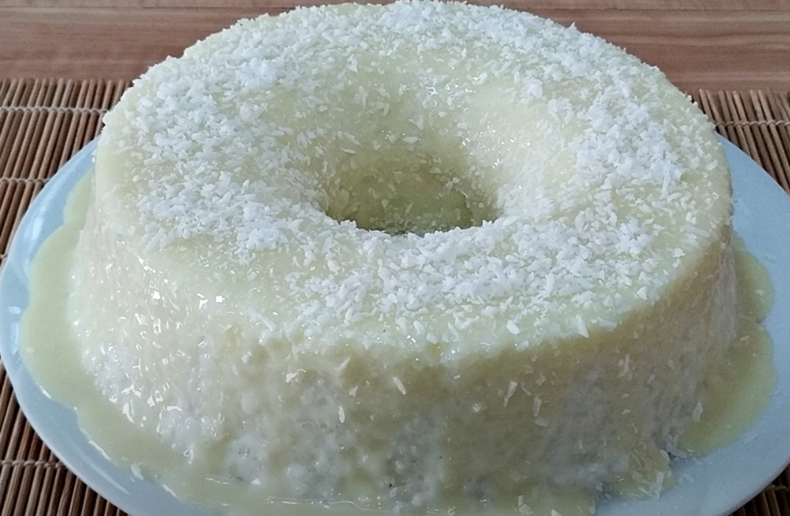

Bolo de Tapioca
Uma receita refrescante e deliciosa

Ingredientes:
- 500 g de tapioca granulada
- 2 xícaras de leite
- 1 xícara de açúcar
- 200 ml de leite de coco
- 3 ovos
- 1 lata de leite condensado
- 1 colher de sopa de fermento
Modo de preparo:
-
Misture a tapioca com o leite e deixe descansar por aproximadamente 30
minutos.
- Acrescente os ovos, o açúcar e o leite de coco.
- Adicione o leite condensado e misture bem.
- Acrescente o fermento e misture delicadamente.
- Coloque a massa em uma forma untada.
- Leve ao forno preaquecido a 180°C.
- Asse por aproximadamente 40 minutos.
- Espere esfriar antes de desenformar.
Próxima receita